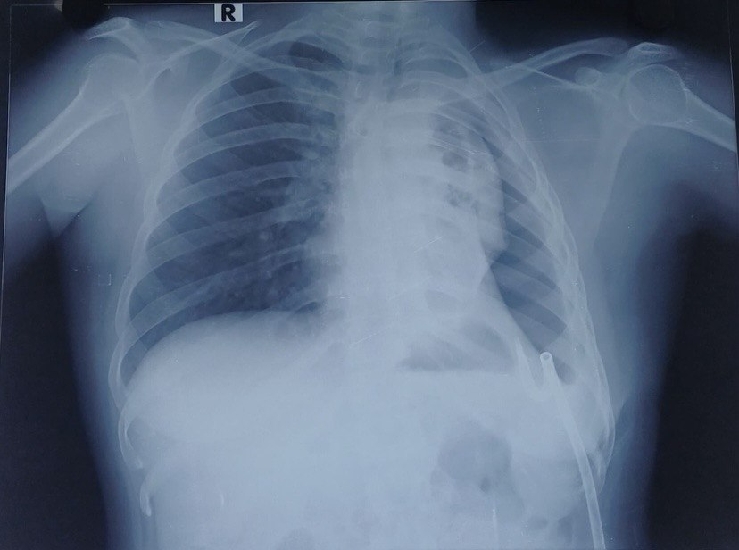

A 27-year-old woman with tubercular pyopneumothorax and lung entrapment underwent left decortication. The pleural space had organized into a thick, fibrotic rind that refused to let the left lung re-expand despite weeks of drainage and anti-tubercular therapy. This case is about the physiology of one-lung ventilation when the non-ventilated lung was already collapsed — and why her saturation never faltered.
DiagnosisLeft tubercular pyopneumothorax with organized pleural process and lung entrapment
MicrobiologyCBNAAT positive; Rifampicin sensitive
Pleural fluidADA and LDH elevated; purulent, loculated
Imaging (HRCT)Gross left pleural effusion, mild pneumothorax, complete collapse of left upper and lower lobes, diffuse pleural thickening, patchy consolidations with fibroatelectasis, left bronchial changes
Intervention so farLeft pigtail catheter inserted for massive effusion; drained; on ATT since diagnosis
Repeat imagingPigtail in situ; mild residual fluid; mild–moderate free air; persistent left lung collapse; diffuse pleural thickening involving entire left pleura
Planned procedureLeft decortication via thoracotomy — requires left lung isolation
The persistent pleural collection, diffuse pleural thickening, and failure of the lung to re-expand despite adequate drainage were consistent with an organized pleural process with lung entrapment. The pleura had transformed from a thin serous membrane into a rigid, fibrotic shell. Decortication was the only remaining option to liberate the trapped lung.
The problem with entrapment
In lung entrapment, the visceral pleura becomes encased in a thick, fibrotic peel that prevents expansion. Drainage alone cannot solve this — the rind must be surgically stripped. Without decortication, the patient faces permanent volume loss, restrictive physiology, and a persistent septic focus.
Imaging
Only a chest X-ray is reproduced here. The HRCT carried patient identifiers burned into every transection level, and de-identifying each slice individually was neither practical nor reliable — so the plain film stands in as the sole imaging reference for this write-up.

Image: Case004_CXR_Preop.jpg
';">
📷 Preoperative Chest X-ray
Left pleural opacity with pigtail catheter in situ. Evidence of left lung collapse, pleural thickening, and mild pneumothorax. Right lung fields are clear.
The Anaesthetic Plan
Thoracic epidural analgesia
A thoracic epidural was placed at T5–T6 before induction and confirmed. It was used for adequate analgesia throughout the procedure and continued into the postoperative period.
Why epidural before induction
In thoracic surgery, a preemptive thoracic epidural reduces volatile anaesthetic requirements, attenuates the surgical stress response, and provides excellent postoperative analgesia. Lower volatile concentrations help preserve hypoxic pulmonary vasoconstriction (HPV) — a critical defence during one-lung ventilation.
Airway and isolation
A 32 Fr left-sided double-lumen endotracheal tube (DLT) was placed. A left-sided DLT has two lumens: the tracheal lumen opens above the carina and delivers gas to the right lung, while the bronchial lumen sits in the left main bronchus. For left-sided surgery, the bronchial lumen was clamped, allowing ventilation through the tracheal lumen to the right lung while the left lung was isolated and deflated.
Isolation was confirmed by auscultation and visual assessment of chest wall excursion. Breath sounds were symmetrical with both lumens open, absent on the left with clamping, and preserved on the right. In right lateral decubitus, the right hemithorax moved with each ventilated breath while the left remained static after clamping.
Monitoring
Standard American Society of Anesthesiologists monitoring was supplemented with an arterial line (right radial) for continuous blood pressure and arterial blood gas sampling, and a central venous catheter (right internal jugular) for central venous pressure monitoring and vasopressor access. A urinary catheter was placed for hourly output measurement.
The Ventilation Strategy
One-lung ventilation (OLV) was initiated after positioning in the right lateral decubitus position (left side up). Protective lung ventilation was employed throughout:
Protective one-lung ventilation was employed. Tidal volume and respiratory rate were adjusted according to oxygenation, carbon dioxide elimination, and airway pressures, with the aim of maintaining plateau pressure below 25 cmH₂O and applying PEEP to the dependent lung to prevent derecruitment. FiO₂ was titrated to maintain adequate oxygenation while avoiding unnecessary hyperoxia.
Protective ventilation during OLV
Current guidelines recommend tidal volumes of 4–6 mL/kg predicted body weight (PBW) during one-lung ventilation, with plateau pressure kept below 25 cmH₂O. PEEP of 5 cmH₂O applied to the dependent lung helps maintain recruitment without overdistension. PBW is derived from patient height, not actual body weight, and should be calculated individually for each patient.
Why the Saturation Held
Despite ventilating only one lung for several hours, SpO₂ remained above 95% throughout, and the patient was extubated breathing room air with SpO₂ of 98–99%. This is not luck — it is physiology working in her favour. Here is why:
I
Effective Lung Isolation
The DLT was correctly positioned. There was no soiling, no spillage of purulent material into the dependent right lung, and no proximal leak. The right lung remained pristine and fully ventilated throughout.
II
Adequate Dependent-Lung Ventilation
Protective tidal volumes, PEEP, and an open lung approach kept the right lung recruited and compliant. The ventilated lung was able to match perfusion with ventilation effectively.
III
Gravity Favoured the Ventilated Lung
In the right lateral decubitus position (left side up), gravity directed pulmonary blood flow toward the dependent, ventilated right lung. The non-dependent, non-ventilated left lung received less perfusion by simple hydrostatic mechanics.
IV
Hypoxic Pulmonary Vasoconstriction (HPV)
Alveolar hypoxia in the collapsed left lung triggered HPV, diverting blood away from the non-ventilated lung toward the ventilated right lung. This reduced intrapulmonary shunt fraction and preserved systemic oxygenation.
V
Anaesthetic Technique Preserved HPV
Volatile anaesthetic was kept at <1 MAC due to the thoracic epidural. High-dose volatile agents inhibit HPV; by minimizing volatile requirements, we preserved this crucial physiological reflex. No vasodilators or beta-agonists that blunt HPV were used.
VI
The Right Lung Was Healthy
The right lung had normal parenchyma, no disease, and adequate compliance. It was capable of maintaining full gas exchange for the entire body. A diseased contralateral lung would have struggled to compensate.
VII
Chronic Collapse Meant Less Shunt
The left lung had been collapsed for weeks. Chronic atelectasis and fibrosis led to reduced vascularity in the affected lung. There was simply less blood flowing to the non-ventilated lung to create a physiologic shunt. An acute intraoperative collapse would have caused more desaturation.
VIII
Preoperative Drainage Decompressed the System
The pigtail catheter had already drained the majority of the effusion and relieved tension physiology. This prevented mediastinal shift, optimized hemodynamics, and allowed the right lung to expand fully before OLV even began.
Hypoxic Pulmonary Vasoconstriction: The Physiology
HPV is the single most important physiological mechanism that preserves arterial oxygenation during one-lung ventilation. Understanding its mechanism, modulators, and clinical relevance is essential for every thoracic anaesthetist.
Mechanism
HPV is an active vasoconstrictor response of the pulmonary circulation to alveolar hypoxia. When alveolar PO₂ falls below approximately 60 mmHg (or when the lung is completely collapsed and unventilated), pulmonary arteriolar smooth muscle contracts, increasing vascular resistance in the hypoxic lung zone. This diverts blood flow toward better-ventilated (and better-oxygenated) lung regions, thereby minimizing intrapulmonary shunt and preserving systemic PaO₂.
The response is biphasic. An acute phase begins within seconds and peaks at approximately 15–30 minutes. A sustained phase maintains the vasoconstrictor tone for hours. In OLV, the non-ventilated lung becomes a potent stimulus for HPV, and the response can persist for the duration of the procedure.
Factors that inhibit HPV
Several commonly used drugs and physiological states attenuate or abolish HPV, increasing shunt and worsening oxygenation:
Volatile anaesthetic agents: Isoflurane, sevoflurane, and desflurane all inhibit HPV in a dose-dependent manner. The effect is clinically significant at concentrations above 1 MAC. Nitrous oxide also inhibits HPV and should be avoided during OLV.
Beta-agonists: High-dose beta-adrenergic agonists (salbutamol, dobutamine) can blunt HPV through pulmonary vasodilation.
Alkalosis: Respiratory or metabolic alkalosis shifts the oxygen–haemoglobin dissociation curve leftward and reduces HPV. Mild hypercapnia or normocapnia is preferable.
Hypothermia and acidosis: While acidosis generally potentiates HPV, severe hypothermia can impair the vascular response.
High pulmonary artery pressures: Pre-existing pulmonary hypertension or excessive fluid loading can overcome the hypoxic vasoconstrictor response by forcing blood through the high-resistance hypoxic vasculature.
Factors that preserve or potentiate HPV
Low volatile concentrations: Keeping volatile agents below 1 MAC preserves the majority of the HPV response. Total intravenous anaesthesia (TIVA) with propofol and opioids preserves HPV completely.
Thoracic epidural analgesia: By reducing volatile requirements and providing opioid-sparing analgesia, epidurals indirectly protect HPV. Epidural local anaesthetics do not directly affect pulmonary vascular tone.
Mild hypercapnia: A PaCO₂ of 40–50 mmHg enhances HPV through acidosis-mediated pulmonary vasoconstriction. However, excessive hypercapnia causes systemic acidosis and sympathetic stimulation.
Adequate depth without vasodilation: Deep anaesthesia with opioids or dexmedetomidine maintains HPV without the vasodilatory side effects of high-dose volatiles.
Normovolaemia: Excessive fluid administration increases pulmonary capillary pressure and can overcome HPV. Conservative fluid management supports the response.
Clinical relevance in this case
In this patient, HPV was particularly effective for two reasons. First, the left lung had been chronically collapsed, so the pulmonary vasculature in that region was already remodelled and poorly perfused — there was less blood to redirect. Second, the anaesthetic technique (low-dose volatile, thoracic epidural, no vasodilators) preserved the HPV response in the remaining perfused vessels. The result was a marked reduction in shunt fraction despite complete left lung isolation.
HPV and the lateral position
HPV works synergistically with gravity. In the lateral decubitus position, the dependent lung receives more perfusion by hydrostatic forces, while the non-dependent (non-ventilated) lung receives less. HPV further reduces perfusion to the non-ventilated lung. Together, these mechanisms can reduce shunt fraction to 20–30% during OLV — low enough to maintain SpO₂ >92% in most patients with a healthy contralateral lung.
The Extubation
Extubation was smooth and uneventful. The patient awoke without coughing or straining, maintained SpO₂ of 98–99% on room air immediately after extubation, and was transferred to the postoperative care unit in stable condition. This was attributed to the thoracic epidural providing dense analgesia without respiratory depression, effective lung isolation preventing soiling, stable hemodynamics throughout, and protective ventilation preserving the right lung mechanics.
Complications Specific to Decortication
Decortication for chronic empyema carries risks distinct from routine thoracotomy. Awareness allows anticipation and early intervention:
Massive Haemorrhage
Stripping the fibrotic peel from the visceral pleura can injure the lung parenchyma or intercostal vessels. Blood loss can be rapid and occult. Maintain low-normal CVP, have blood available, and communicate with the surgeon before each peel.
Air Leak / Bronchopleural Fistula
The inflamed, friable lung may tear during decortication, creating a bronchopleural fistula. Low airway pressures help, but persistent air leak postoperatively requires water-seal drainage and may need re-exploration.
Re-expansion Pulmonary Oedema
Rapid re-expansion of a chronically collapsed lung can cause unilateral pulmonary oedema. Prevent by gradual re-expansion, limiting suction on the chest drain, and maintaining cautious fluid balance.
Hypotension from Epidural
Thoracic epidurals cause sympathetic blockade and vasodilation. Hypotension is common after positioning and dosing. Treat with fluid boluses and phenylephrine or noradrenaline as needed. Avoid over-resuscitation.
Soiling of the Ventilated Lung
Purulent material from the empyema space can spill into the dependent right lung if isolation is imperfect. Meticulous DLT positioning, pre-operative suctioning, and intraoperative bronchoscopic surveillance are essential.
Residual Sepsis / Empyema Recurrence
Incomplete decortication or residual loculations can lead to persistent sepsis. Adequate drainage, appropriate ATT, and nutritional support are critical. The anaesthetist must ensure the patient is stable enough for prolonged surgery.
Guidelines, Protocols, and the Evidence Base
Key guidelines
ATS / BTS / INSHAC (2020): For tuberculous pleural effusion with failed drainage and lung entrapment, decortication is indicated once ATT has been initiated and the patient is clinically optimized.
ESAIC/ESTS (2022): OLV should use protective ventilation: tidal volumes 4–6 mL/kg PBW, plateau pressure <25 cmH₂O, PEEP 5 cmH₂O, and FiO₂ titrated to SpO₂ >92%.
ASA Practice Parameters (2020): Thoracic epidural analgesia is recommended for open thoracotomy to reduce postoperative pain, pulmonary complications, and chronic post-thoracotomy pain syndrome.
STS / EACTS: In decortication for chronic empyema, maintain low-normal CVP to minimize bleeding; use lung-protective ventilation; and watch for re-expansion pulmonary oedema.
Stepwise anaesthetic protocol for decortication
Step 1 — Pre-operative assessment
Review imaging for extent of pleural disease, lung collapse, and mediastinal shift. Check CBNAAT and ATT regimen. Assess nutritional status and sepsis control. Ensure blood is cross-matched.
Step 2 — Thoracic epidural placement
Place T5–T6 epidural before induction. Confirm placement. Start infusion. This is the foundation of analgesia and volatile sparing.
Step 3 — Induction and airway
Rapid sequence or standard induction as indicated. Insert 32 Fr left-sided DLT. Confirm with auscultation and fibreoptic bronchoscopy. Position patient in right lateral decubitus.
Step 4 — One-lung ventilation
Initiate OLV with protective settings: TV 4–6 mL/kg PBW, RR 14–16, PEEP 5 cmH₂O, FiO₂ 0.5–0.6. Monitor SpO₂, EtCO₂, plateau pressure, and compliance continuously.
Step 5 — Intraoperative vigilance
Watch for bleeding (CVP, urine output, haemoglobin), air leak (sudden drop in compliance), and soiling (desaturation, increased airway pressures). Communicate with surgeon before each peel.
Step 6 — Re-expansion and closure
Allow gradual re-expansion of the decorticated left lung. Avoid aggressive suction on the chest drain. Check for air leak under water seal. Resume two-lung ventilation gently.
Step 7 — Extubation
Ensure full reversal, adequate spontaneous ventilation, and pain control. Extubate awake. Confirm SpO₂ >95% on room air before transfer.
What I Keep Coming Back To
This case illustrates that a chronically collapsed lung behaves differently from an acutely deflated one. The weeks of fibrosis and reduced vascularity meant less shunt during OLV, while the preserved HPV response and healthy right lung maintained oxygenation throughout. The smooth extubation and immediate room-air saturation were the result of deliberate, layered choices: preemptive epidural analgesia, meticulous DLT confirmation, protective ventilation, and volatile sparing. Each element reinforced the others.
References
Senturk M, Orhan ME, Ozcan PE. Thoracic anaesthesia and lung isolation: ESAIC/ESTS joint guidelines. Eur J Anaesthesiol. 2022;39(8):599–621.
Lohser J, Slinger P. Lung isolation and one-lung ventilation. In: Miller's Anesthesia. 9th ed. Elsevier; 2020: Chapter 54.
Licker M, et al. The hypoxic pulmonary vasoconstriction: From physiology to clinical application in thoracic surgery. J Thorac Dis. 2021;13(8):4995–5016.
Parab S, et al. Inhalational versus intravenous anesthetics during one lung ventilation in elective thoracic surgeries: A narrative review. J Cardiothorac Vasc Anesth. 2021;35(12):3675–3685.
Myles PS, Ball D. Current state of one-lung ventilation. Anesthesiol Clin. 2020;38(4):735–751.
Kellow NH, Scott AD, White SA, Feneck RO. Comparison of the effects of propofol and isoflurane anaesthesia on right ventricular function and shunt fraction during thoracic surgery. Br J Anaesth. 1995;75(5):578–582.
Scarci M, et al. EACTS expert consensus statement for surgical management of pleural empyema. Eur J Cardiothorac Surg. 2015;48(5):642–653.
World Health Organization. Guidelines for treatment of drug-susceptible tuberculosis and patient care. 2017 update. WHO Press; 2017.
Light RW. Parapneumonic effusions and empyema. Proc Am Thorac Soc. 2006;3(1):75–80.
August 2026Thoracic · Airway · Epidural · Tuberculosis · Decortication
Ode to the OR is a personal project dedicated to education and reflection. Any patient-related content has been fully de-identified and may be modified to protect confidentiality in accordance with HIPAA principles, the Digital Personal Data Protection (DPDP) Act, 2023 (India), and the ethical mandates of the National Medical Commission (NMC) of India. AI tools may assist with language refinement and presentation, but all content is reviewed, curated, and published by the author. The views expressed are solely my own and do not represent any institution, hospital, employer, or training program. Nothing on this site should be considered medical advice or a substitute for professional clinical judgment.